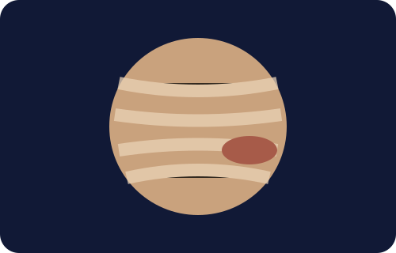

🟤 ดาวพฤหัสบดี
เนื้อหาความรู้เกี่ยวกับดาวพฤหัสบดี

ลักษณะทั่วไป
ดาวพฤหัสบดีเป็นดาวเคราะห์ที่ใหญ่ที่สุดในระบบสุริยะ เป็นดาวเคราะห์แก๊สที่ประกอบด้วยไฮโดรเจนและฮีเลียมเป็นส่วนใหญ่
ข้อมูลสำคัญ
บรรยากาศมีแถบเมฆหลายสีและพายุจำนวนมาก รวมถึงจุดแดงใหญ่ ซึ่งเป็นพายุขนาดมหึมาและมีมานานหลายร้อยปี
เพิ่มเติม
ดาวพฤหัสบดีมีสนามแม่เหล็กที่ทรงพลังมาก เนื่องจากการเคลื่อนที่ของวัสดุนำไฟฟ้าภายในดาว
ดาวพฤหัสบดีมีสนามแม่เหล็กที่ทรงพลังมาก เนื่องจากการเคลื่อนที่ของวัสดุนำไฟฟ้าภายในดาว
สิ่งที่น่าสนใจ
ดวงจันทร์กาลิเลียน 4 ดวงที่มีชื่อเสียงคือ ไอโอ ยูโรปา แกนีมีด และคัลลิสโต
ดวงจันทร์กาลิเลียน 4 ดวงที่มีชื่อเสียงคือ ไอโอ ยูโรปา แกนีมีด และคัลลิสโต